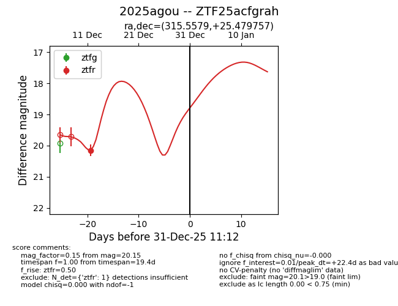
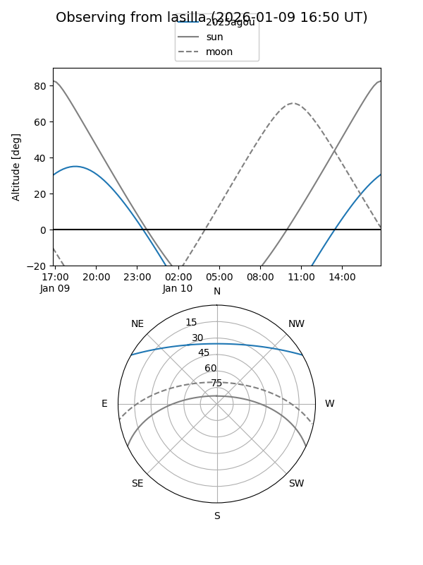
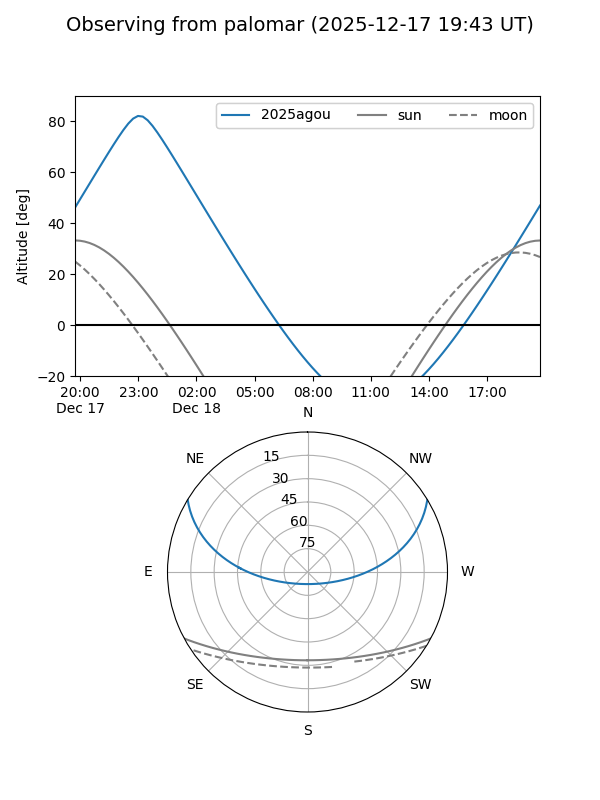

2025agou
Target 2025agou at 2025-12-31 16:59
Aliases and brokers:
FINK:
Lasair:
ALeRCE:
TNS:
YSE:
alt names
ZTF25acfgrah (ztf,fink_ztf)
2025agou (tns,yse)
Coordinates:
equatorial (ra, dec) = 315.5579,+25.47976
equatorial (HMS+DMS) = 21:02:13.89,+25:28:47.13
galactic (l, b) = (71.4764,-13.76047)
Flags:
Photometry:
last ztfr=20.15
1 ztfr detections
Lightcurve

Visibility


Additional plots